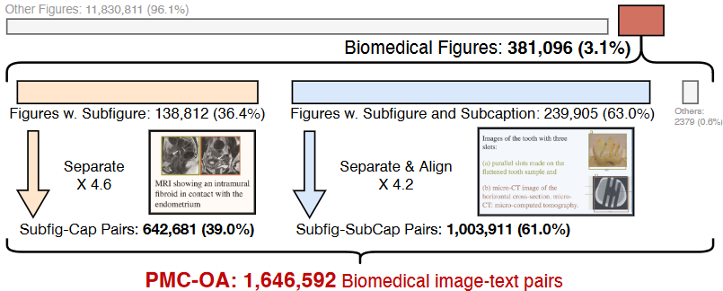
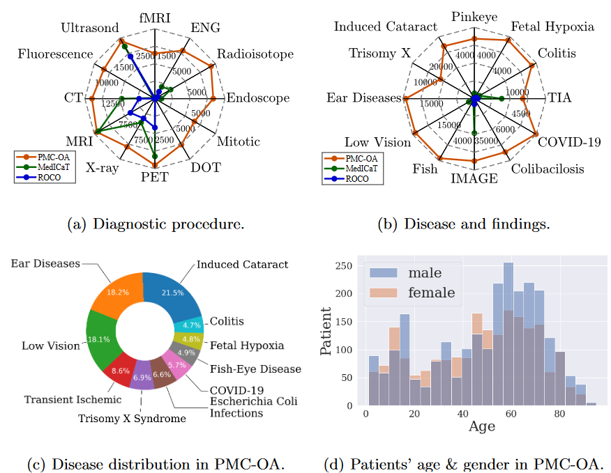
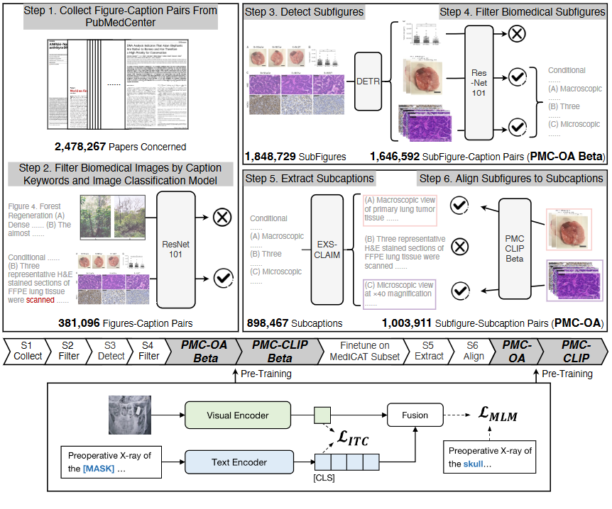
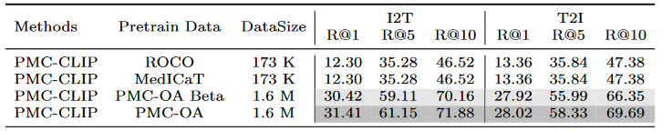
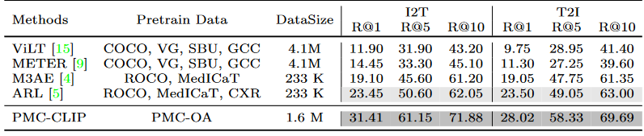
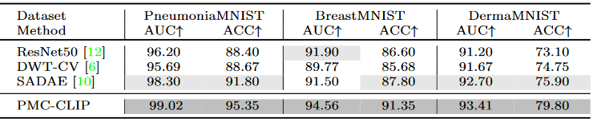
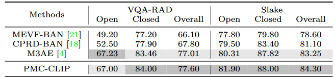
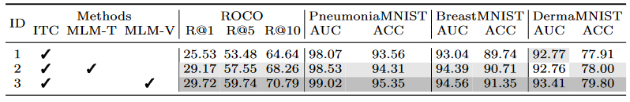

MICCAI2024(1)-PMC-CLIP
论文地址：https://arxiv.org/abs/2303.07240
论文代码：https://github.com/WeixiongLin/PMC-CLIP/
PMC-CLIP(MICCAI 2024)
摘要
- PMC-OA，一个包含160万图像-描述对的生物医学数据集，数据来自PubMed Central的开放获取子集，规模是之前数据集的8倍。PMC-OA涵盖了多种模式和疾病，绝大多数图像-描述对在更细的层级（如子图和子标题）上对齐。
- 在PMC-OA上预训练的CLIP风格模型PMC-CLIP，在多个下游任务上实现了当前最优的表现，包括ROCO上的图像-文本检索、MedMNIST图像分类和医学问答（VQA），例如，在图像-文本检索任务中R@10提升了8.1%，在图像分类任务中的准确率提升了3.9%。
1 引言
生物医学领域在基础模型方面的进展相对缓慢，原因有二：
- 需要专家标注的专业性要求
- 数据隐私的限制
因此本文提出了使用公开科学论文来构建一个大规模、高质量的生物医学图像-文本数据集的初步研究，且仅需极少的手动操作。
我们从PubMed Central（美国国立卫生研究院的一个生物医学与生命科学期刊文献的免费全文档案）中获取图像及其相应的描述，这带来了两个优势：
- 公开的科学文献内容通常经过专家的充分标注和审核
- 图像已进行匿名化和去识别化处理
虽然已有人尝试通过公共科学文献来缓解生物医学领域的数据不足问题，但这些数据集通常存在一定局限。例如，ROCO数据集仅包含了81,000张放射学图像，而MedICAT数据集虽然扩大到217,000张图像，但大多是包含多个子图的复合图。在本研究中，作者提出了一种自动化流程，通过科学文献生成具有子图-子标题对应关系的数据集，分为三大阶段：医学图像收集、子图分割、子标题分割和对齐。最终构建的PMC-OA数据集包含165万对图像-文本样本，如图1与图3所示：


作者基于新构建的PMC-OA提出并训练了PMC-CLIP模型，一种用于生物医学领域的视觉语言模型。
架构:
- 图像编码器（基于ResNet）
- 文本编码器（基于BERT）
目标函数：
- 图像-文本对比学习（ITC），匹配同一样本的图像和文本表示。
- 遮蔽语言建模（MLM），用于通过上下文和视觉线索重建被遮蔽的词语，以增强图像和文本的交互性。
这两项损失的加权和构成了模型的总损失
主要贡献：
- 提出了一种自动化流程，从科学论文中构建高质量的生物医学图像-文本数据集，并通过该流程构建了PMC-OA数据集，该数据集的规模比以往扩大了8倍，且可以通过该流程不断更新；
- 在构建的图像-文本数据集上预训练了一个视觉-语言模型PMC-CLIP，用于生物医学领域的基础模型；
- 在多个任务（检索、分类和视觉问答）上进行了深入实验，并在大多数下游数据集上实现了当前最优的性能，展示了PMC-OA数据集和PMC-CLIP基础模型的优越性。
2 PMC-OA Dataset

2.1 数据集收集
医学图像收集(图2中的1，2步)：
- 首先，从PubMed Central提取了图像和对应的标题描述，截至2022年9月16日，共覆盖了2,478,267篇论文，提取了12,211,907对图像-标题。
- 为了提取医学图像，团队先定义了一组医学关键词以筛选标题，删除标题中不包含关键词的图像-标题对。
- 接着，应用经过DocFigure数据集训练的ResNet-101模型将图像分类为28个类别，保留在“医学”类别得分排名前四的图像，最终得到381,096个医学图像。
子图分割(图2中的3，4步)：
- 在随机检查了上一步筛选出的约300张图像后，研究人员发现大约80%的图像是复合图，即包含多个小图的图像。为此，研究团队训练了一个检测器将复合图分割为子图，具体而言，使用了一个基于ResNet-34的DETR模型（包含4个编码层和4个解码层，以及32个可学习的query）。
- 该检测器在MedICaT子集上进行了训练，对于超参数调整，将数据集以 3:1 的比例分为训练集和测试集，该子集(MedICaTSub)包含2,069张手动分割的复合图及其对应的标题。最终模型在测试集上的mAP@0.5达到了0.94，精度和召回率分别为0.93和0.94，以0.7作为置信度阈值。
- 分解复合图后，图表等非医学子图可能会与医学子图混合，因此我们用分类模型过滤导出的子图（重复第一阶段）。378,717 个复合图通过这一过程，得到了1,646,592个子图。标题的数量与复合图个数相同，因此此时每个标题平均分配了 4.3 个子图。我们将此数据集称为 PMC-OA-Beta 版本
子标题分割与对齐(图2中的5，6步)：
-
为了进一步将子图与其在完整标题中的对应部分（即子标题）对齐，首先将标题分割为子标题。使用了一种现有的标题分割工具来处理PMC-OA Beta数据集中的标题。
-
工具有时无法完成分割，最终从239,905个可分割标题中提取了898,467个子标题，形成了1,003,911对子图-子标题对。
-
为了将每个子图与最相关的子标题对齐，研究团队在PMC-OA Beta上预训练CLIP模型，然后在 MedICaTSub 上对其进行微调，使之能够匹配子图和子标题。。我们将子集按 3:1 分为训练集和测试集，微调后的模型在测试集上实现了 73% 的对齐精度。最终对齐了 1,003,911 个子图-子标题对。连同其余 642,681 个子图-标题对，我们将该数据集称为PMC-OA。之后在此数据集上预训练 PMC-CLIP。
讨论：
- 已有一些开创性工作通过公开的科学文献构建了生物医学数据集，这些数据集为学术界提供了宝贵的资源，但存在一些局限性。
本研究旨在改进数据收集流程，以获得规模更大、种类更多样且数据更准确的数据集。
- 首先，PMC-OA覆盖了更广泛的论文范围（2,478,267篇），大大超过了ROCO和MedICaT，数据集规模因此扩大到了1.6百万对。
- 其次，与仅包含放射学图像的ROCO不同，PMC-OA还包含了其他非放射学医学图像，提供了更多样的生物医学数据(如图3中所示)。
- 最后，我们是首个将子图分割、子标题分割和对齐整合到数据收集流程中的工作，这一方法不仅使数据集规模扩展至MedICaT的8倍和ROCO的20倍，还尽可能地减少了数据噪声。
2.2 数据集总结
从三个不同的角度对收集的PMC-OA数据集进行了统计分析：诊断程序、疾病和发现，以及数据公平性
- 诊断程序：PMC-OA数据集涵盖了广泛的诊断程序，从常见的CT、MRI、X光到少见的细胞有丝分裂图像，数据集的多样性较以往大大提高。
- 疾病和发现：PMC-OA中的疾病信息以自由文本形式提供，允许进行更精细的识别和分析。例如，眼科疾病可进一步分为白内障、结膜炎、黄斑变性等多种类型。
- 公平性：数据集中患者的性别比例和年龄分布大致均衡，男性占比约为54%，这一特性确保了数据集在患者特征方面的公正性，有助于增强跨中心的泛化能力
讨论：
详细的数据统计显示，PMC-OA数据集在以下三个方面具有优势：
(i) 诊断程序的多样性；
(ii) 涵盖的疾病种类丰富；
(iii) 数据集的公平性。
- 首先，目前使用最广泛的图像-文本数据集是MIMIC-CXR，但它仅包含胸部X光图像，极大地限制了视觉语言预训练方法的潜力，而我们的数据集可弥补这一不足。
- 其次，诊断是临床工作中的关键环节，我们的数据集覆盖了广泛的疾病种类，支持学习共享的疾病模式，促进自动诊断的准确性。
- 最后，数据集中患者特征的均衡性确保了数据集较少受到患者特征偏差的影响，从而提供了更好的跨中心泛化能力
3 Visual-language Pre-training
3.1 架构
给定一个包含( N )对图像-文本的数据集 ，
- $\mathcal I_i \in \mathbb{R}^{H \times W \times C} $ 代表图像，
- H 、W 和C 分别为图像的高度、宽度和通道，
- 代表配对的文本
研究团队的目标是训练一个CLIP风格的视觉-语言模型，包括图像编码器 和文本编码器 。
具体来说，给定一个特定的图像-文本对(, )，通过ResNet构建的图像编码器 和基于BERT的文本编码器 分别对图像和文本进行编码。设嵌入维度为d，文本的token长度为l：
其中，v表示整个图像的嵌入，T表示文本的句子嵌入，t代表[CLS]标记的嵌入
3.2 训练目标
在这一部分，研究团队为视觉-语言模型设定了两个训练目标：图像-文本对比学习（ITC）和遮蔽语言建模（MLM）。
图像-文本对比学习（ITC）：按照 CLIP原论文实现 ITC 损失，目的是匹配来自同一图像-文本对的视觉和文本表示。具体来说，定义批大小为b，我们计算当前视觉/文本嵌入（v / t）与批次内所有样本之间的softmax归一化跨模态点积相似度,称之为,，最终的ITC损失计算公式为：
其中，和表示单一匹配标签，CE表示InfoNCE损失。
遮蔽语言建模（MLM）：按照BERT原论文实现 MLM 损失。研究团队随机遮蔽文本中15%的词语，用[MASK]替换，然后将图像嵌入与句子嵌入拼接，输入到一个基于自注意力的融合模块，并得到输出序列中相应位置处的屏蔽标记的预测 。 表示真实值MLM损失计算公式为：
总训练损失：最终损失是上述两项损失的加权和：
其中，λ是控制MLM损失权重的超参数，默认设为0.5
4 实验设置
4.1 预训练数据集
- ROCO 数据集：ROCO（Radiology Objects in Context）是从 PubMed 中收集的图像-标题数据集，包含了 81,000 个样本，去除了所有的复合图像或非放射性图像。
- MedICaT 数据集：MedICaT 扩展了 ROCO 数据集，包含 217,000 个图像-标题对，但其中约 75% 是复合图像，即每个图像包含多个子图。
- MIMIC-CXR 数据集：这是最大的胸部 X 光片数据集，包含 377,110 个样本。每张图像都配有描述医生发现的临床报告
4.2 下游任务
图像-文本检索 (Image-Text Retrieval, ITR)：该任务包含从图像到文本 (I2T) 和从文本到图像 (T2I) 的检索。研究人员在不同数据集上训练 PMC-CLIP，并在 ROCO 测试集中进行评估。需要注意的是，研究人员在数据与 ROCO 数据集之间进行了去重，因此结果类似于零样本（zero-shot）评估。参考先前的研究，从 ROCO 测试集中抽样 2000 对图像-文本对来进行评估。
分类任务：PMC-CLIP 被微调以适应不同的下游图像分类任务。例如，MedMINIST 数据集包含了 12 个任务，涵盖了医学图像的主要数据类型，如结肠病理学、皮肤镜检查、视网膜 OCT 等。
视觉问答 (Visual Question Answering, VQA)：该任务在 VQA-RAD 和 SLAKE 数据集的官方分割上进行评估，其中 SLAKE 包含 642 张图像和 14,028 个问题，VQA-RAD 包含 315 张图像和 3,515 个问题。VQA-RAD 和 SLAKE 中的问题分为封闭式（答案选择有限）和开放式（答案选择不限制）两类。适配 VQA 任务时，PMC-CLIP 保留了大部分预训练参数，包括视觉编码器、文本编码器和融合模块。图像和问题输入到 PMC-CLIP 中，输出嵌入用于计算与每个候选答案的相似性。此外，文本编码器分别使用了 10 个可学习的答案和问题提示向量，以提高适应性。
评估指标：分类任务使用准确率 (Accuracy) 和 AUC 指标，检索任务使用 Recall@K (K=1,5,10) 指标，VQA 任务则使用准确率作为评估标准
4.3 实施细节
- 视觉和文本编码器：使用了 ResNet50 作为视觉编码器，PubmedBERT 作为文本编码器。此外，融合模块包含 4 层 transformer。
- 输入数据处理：图像被调整为 224×224 的尺寸进行输入。在预训练过程中，文本编码器使用 PubmedBERT 初始化，而视觉编码器和融合模块则从零开始训练。
- 优化器和训练配置：采用了 AdamW 优化器，学习率设为。模型在 GeForce RTX 3090 GPU 上训练，批量大小为 128，训练持续 100 轮。前 10 轮用于热身，以稳定训练
5 结果
- 我们首先在图文检索任务上与现有的大规模生物医学数据集进行比较，以证明PMC-OA的优越性
- 我们在三个不同的下游任务（即检索、分类和视觉问答）中对模型（在 PMC-OA 上预训练）进行了微调。
- 我们还对预训练目标和模型架构进行了彻底的实证研究
注意:
对于所有实验，除非另有说明，使用默认设置：ResNet50 作为图像编码器，并使用 ITC 和 MLM 目标进行预训练。
5.1 PMC-OA超越SOTA大规模生物医学数据集
在图像-文本(相互)检索任务上，将 PMC-CLIP 模型在不同数据集上分别进行预训练，并在 ROCO 测试集上评估其性能。表1显示，简单地切换为使用 PMC-OA 数据集可以显著提高检索性能，这表明该数据集的重要性.

5.2 PMC-CLIP 跨下游任务实现 SOTA
PMC-CLIP 的学习表示在不同下游任务上均表现出色，包括图像-文本检索、图像分类和视觉问答（VQA）任务。
- 图像-文本检索：在 ROCO 测试集上的图像到文本（I2T）Rank@10指标中，PMC-CLIP 相较之前的最新模型提升了 8.1%。特别值得注意的是，尽管 ROCO 数据集被其他模型（如 M3AE 和 ARL）用于预训练，PMC-CLIP 在训练过程中并未包含 ROCO 数据。

- 图像分类：为了证明 PMCCLIP 出色的可迁移性,在 MedMNIST 数据集上微调 PMC-CLIP 并与其他最新方法（如 DWT-CV 和 SADAE）进行对比，PMC-CLIP 在多项任务上始终获得更高的结果。相较于从头开始训练的 ResNet，PMC-CLIP 的微调显著提升了性能(2303.07240v1)。

- 视觉问答：视觉问答任务要求模型学习更细粒度的视觉和语言表示。在 VQA-RAD 和 SLAKE 数据集上的评估中，PMC-CLIP 超越了当前最佳方法 M3AE 在大多数指标上的表现

5.3 消融研究
为了进一步分析预训练目标（图像-文本对比学习 ITC 和掩码语言建模 MLM）的有效性，研究人员进行了消融研究。我
比较了使用纯文本上下文的MLM（MLM-T）和使用视觉提示的MLM（MLM-V）

- 研究发现，ITC 目标对于预训练至关重要，贡献了大部分的性能提升；ID 1
- 而仅使用文本上下文的 MLM 目标则起到正则化作用；ID 2
- 通过加入视觉特征，模型能够学习更细粒度的图像-文本对齐关系，最终取得最佳结果 .ID 3